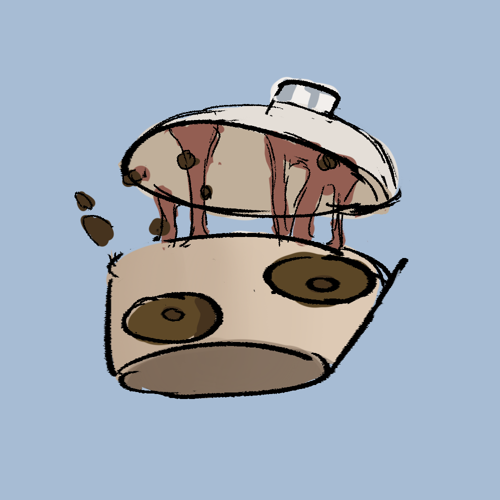

Bobasaur
Type: Beverage
Description:
Bobasaur is a bubbly Foodster born from a cup of milk tea.
It's often seen hopping and splashing, spreading sticky pearls wherever it goes.
Though mischievous, Bobasaur is fiercely loyal to its chef.
Abilities: